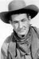

Country:United States, 74 minutes
Spoken languages:English
Genres:Horror, Sci-Fi
Director(s):Ray Kellogg
Writer(s):Jay Simms
Video Codec:Unknown
Number: 75


Certification:
Storyline:
A small town in Texas finds itself under attack from a hungry, fifty-foot-long gila monster. No longer content to forage in the desert, the giant lizard begins chopming on motorists and train passengers before descending upon the town itself. Only Chase Winstead, a quick-thinking mechanic, can save the town from being wiped out.
Cast: 
Medium: Original DVD,
Comments: Part of: 100 Greatest Horror Classics
Loaned: No
Aspect ratio: Unknown